H4 – Ábragyűjtemény
Ez a fájl a H4 dokumentumainak összes ábráját tartalmazza magyarázattal együtt. Az ábrák számozása megegyezik a dokumentumokéval: az „ANAL” jelű ábrák az Analízis modell 1.1, az „RTERV” jelűek a Rendszertervezés 1.0 ábrái. Minden ábra PlantUML-lel készült; a forráskód a H4/uml mappában, az ábra nevével megegyező .puml fájlban található.
- ANAL 1. – A kezdeti (elemzési szintű) osztálydiagram
- ANAL 2. – A rendszer funkcionális alrendszerei (csomagdiagram)
- ANAL 3. – UC-01 Bejelentkezés – szekvenciadiagram
- ANAL 4. – UC-18 Szerepkörök kezelése – aktivitásdiagram
- ANAL 5. – A Felhasználókezelés alrendszer osztálydiagramja
- ANAL 6. – UC-10 Saját oktatói adatok szerkesztése – szekvenciadiagram
- ANAL 7. – A Szervezet és oktatók alrendszer osztálydiagramja
- ANAL 8. – UC-15 Tartalom kezelése – szekvenciadiagram (esemény közzététele)
- ANAL 9. – UC-05 Események böngészése és szűrése – szekvenciadiagram
- ANAL 10. – A Content (Tartalom) osztály állapotdiagramja
- ANAL 11. – UC-03 Hely keresése – aktivitásdiagram
- ANAL 12. – A Tartalomkezelés alrendszer osztálydiagramja
- ANAL 13. – Parkolóadat fogadása – szekvenciadiagram
- ANAL 14. – UC-04 Szabad parkolóhelyek megtekintése – szekvenciadiagram
- ANAL 15. – A ParkingZone (Parkolózóna) osztály állapotdiagramja (adatfrissesség)
- ANAL 16. – A menetrend napi betöltése – aktivitásdiagram
- ANAL 17. – A Külső adatok alrendszer osztálydiagramja
- ANAL 18. – UC-11 Ügyintézési időpont foglalása – szekvenciadiagram
- ANAL 19. – UC-12 Saját foglalások kezelése – szekvenciadiagram (lemondás)
- ANAL 20. – A Slot (Időpont) osztály állapotdiagramja
- ANAL 21. – A Booking (Foglalás) osztály állapotdiagramja
- ANAL 22. – UC-16 Időpontsáv rögzítése – aktivitásdiagram
- ANAL 23. – Az Ügyintézés alrendszer osztálydiagramja
- ANAL 24. – UC-13 Hibabejelentés beküldése – szekvenciadiagram
- ANAL 25. – UC-17 Hibabejelentések kezelése – szekvenciadiagram
- ANAL 26. – A FaultReport (Hibabejelentés) osztály állapotdiagramja
- ANAL 27. – A bejelentés felelős egységhez rendelése – aktivitásdiagram
- ANAL 28. – A Hibabejelentés alrendszer osztálydiagramja
- ANAL 29. – Az analízis modell áttekintő osztálydiagramja
- RTERV 1. – A felhasználói felület navigációs térképe
- RTERV 2. – Képernyőterv: Kezdőlap (asztali nézet)
- RTERV 3. – Képernyőterv: Új foglalás (UC-11)
- RTERV 4. – Képernyőterv: Új hibabejelentés (UC-13)
- RTERV 5. – Képernyőterv: Bejelentések kezelése (UC-17)
- RTERV 6. – Szemantikai adatmodell (ER) – felhasználók, szervezet és ügyintézés
- RTERV 7. – Szemantikai adatmodell (ER) – tartalom és külső adatok
- RTERV 8. – Szemantikai adatmodell (ER) – hibabejelentés
- RTERV 9. – Relációs adatmodell – felhasználók, szervezet és ügyintézés
- RTERV 10. – Relációs adatmodell – tartalom és külső adatok
- RTERV 11. – Relációs adatmodell – hibabejelentés
- RTERV 12. – Az adatbázissal kapcsolatot tartó osztályok
- RTERV 13. – Egyidejű foglalás kezelése – aktivitásdiagram
- RTERV 14. – Értesítések küldése újrapróbálással – aktivitásdiagram
- RTERV 15. – Egy API-kérés útja a rendszeren belül – szekvenciadiagram
- RTERV 16. – A rendszer komponensei – komponensdiagram
- RTERV 17. – Telepítési diagram
I. Analízis modell
1. ábra – A kezdeti (elemzési szintű) osztálydiagram
Az SRS use case-leírásaiból és követelményeiből kigyűjtött problématér-osztályok és a köztük lévő asszociációk. Ebben a fázisban csak az osztályok neve és a kapcsolatok neve szerepel; a számosságokat, az attribútumokat és az operációkat az alrendszerek modelljei pontosítják. A színek azt az alrendszert jelölik, amelybe az osztály a felbontás után kerül.

Forrás: H4/uml/a01_kezdeti_osztalydiagram.puml
2. ábra – A rendszer funkcionális alrendszerei (csomagdiagram)
A kezdeti osztálydiagram felbontása hat funkcionális alrendszerre. A szaggatott nyilak függőséget jelölnek: a nyíl kiindulópontján álló alrendszer használja a végpontján álló osztályait; a feliratok a köztük áramló információt nevezik meg. A Felhasználókezelés alrendszert minden más alrendszer használja (ki a felhasználó, milyen jogai vannak, kinek kell értesítést küldeni). A külső rendszerek a perem mentén, a hozzájuk kapcsolódó alrendszer mellett láthatók.
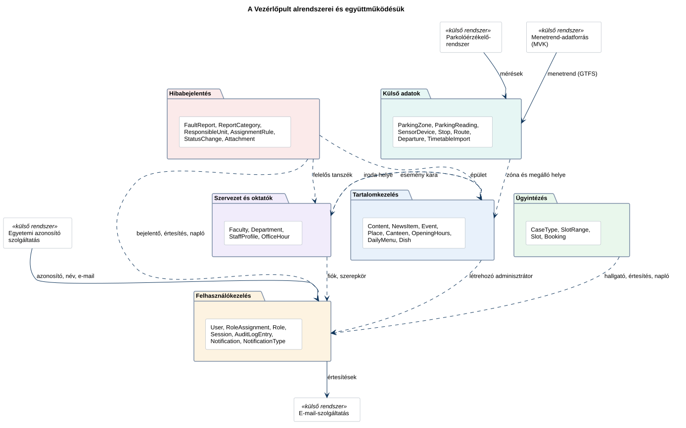
Forrás: H4/uml/a02_alrendszerek.puml
3. ábra – UC-01 Bejelentkezés – szekvenciadiagram
A bejelentkezés szokásos működése, az első belépés (A3) alternatívájával. A jelszót a felhasználó az egyetemi azonosító szolgáltatás oldalán adja meg, a Vezérlőpult csak a visszakapott azonosítót, nevet és e-mail-címet látja (K-02, K-05).

Forrás: H4/uml/s1_seq_bejelentkezes.puml
4. ábra – UC-18 Szerepkörök kezelése – aktivitásdiagram
A szerepkör módosításának ellenőrzési lépései. A K-45 két szabálya (a saját adminisztrátori szerepkör és az utolsó adminisztrátor szerepköre nem vonható vissza) a mentés előtt fut le; oktatói szerepkörnél a tanszék megadása kötelező, és ilyenkor az oktatói adatlap is a fiókhoz rendelhető.

Forrás: H4/uml/s1_act_szerepkor.puml
5. ábra – A Felhasználókezelés alrendszer osztálydiagramja
Az alrendszer osztályai attribútumokkal és operációkkal. A szürke osztályok más alrendszerhez tartoznak; leírásuk ott szerepel.

Forrás: H4/uml/s1_class.puml
6. ábra – UC-10 Saját oktatói adatok szerkesztése – szekvenciadiagram
Az oktató az adatlapján csak az irodát, a fogadóórákat és a megjegyzést módosíthatja (K-27). Mentés előtt a StaffProfile ellenőrzi a fogadóórákat; hibás adatnál nem ment (E1). A módosítás naplózásra kerül (K-46), és azonnal látható (K-28).

Forrás: H4/uml/s2_seq_adatlap.puml
7. ábra – A Szervezet és oktatók alrendszer osztálydiagramja
Az alrendszer osztályai attribútumokkal és operációkkal. Az oktatói adatlap fiók nélkül is létezhet (az oktató még nem lépett be), ezért a User-hez fűződő kapcsolata mindkét irányban 0..1 számosságú.

Forrás: H4/uml/s2_class.puml
8. ábra – UC-15 Tartalom kezelése – szekvenciadiagram (esemény közzététele)
Az adminisztrátor egy esemény szerkesztését mutatja be előnézettel és közzététellel. Az űrlap betöltésekor a felület megjegyzi a változatszámot; ha mentéskor a tárolt változatszám már nagyobb, akkor közben más is mentette az elemet, és a rendszer nem írja felül (E2).

Forrás: H4/uml/s3_seq_kozzetetel.puml
9. ábra – UC-05 Események böngészése és szűrése – szekvenciadiagram
A nyilvános eseménylista betöltése és szűrése. A szűrés az Event osztályszintű search() műveletével történik; a rendszer adatai nem változnak.

Forrás: H4/uml/s3_seq_esemenyek.puml
10. ábra – A Content (Tartalom) osztály állapotdiagramja
A hírek, események, térképi helyek és napi étlapok közös életciklusa. Csak a Közzétett állapotú tartalom látszik a nyilvános felületen; az archivált elem az adminisztrációs listában megmarad (K-39, K-40).
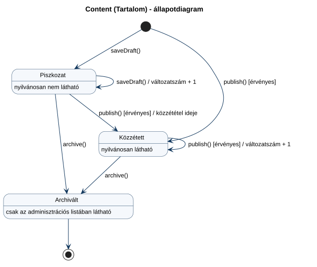
Forrás: H4/uml/s3_state_tartalom.puml
11. ábra – UC-03 Hely keresése – aktivitásdiagram
A keresés feldolgozási lépései. A keresőkifejezést és a helyek nevét ugyanaz a normalize() művelet alakítja kisbetűs, ékezet nélküli formára, ezért a keresés nem érzékeny a kis- és nagybetűre és az ékezetekre (K-10). A javaslatok rangsorolása: pontos egyezés, szókezdő egyezés, részleges egyezés; azon belül az épületek előbb.

Forrás: H4/uml/s3_act_helykereses.puml
12. ábra – A Tartalomkezelés alrendszer osztálydiagramja
Az alrendszer osztályai attribútumokkal és operációkkal. A Content absztrakt bázisosztály a négy közzétehető tartalomfajta közös attribútumait és életciklus-műveleteit tartalmazza.

Forrás: H4/uml/s3_class.puml
13. ábra – Parkolóadat fogadása – szekvenciadiagram
A parkolóérzékelő-rendszer (A-07) adatküldése. Ez nem önálló use case, hanem az UC-04 adatforrása. Az eszközt a titkos kulcsa hitelesíti (SRS 11.3); a hibás vagy értelmetlen adat nem kerül be.

Forrás: H4/uml/s4_seq_parkolomeres.puml
14. ábra – UC-04 Szabad parkolóhelyek megtekintése – szekvenciadiagram
A felület zónánként lekéri a szabad helyek számát, a színjelölést és az adat frissességét, és amíg az oldal nyitva van, percenként frissít (A1).

Forrás: H4/uml/s4_seq_parkolas.puml
15. ábra – A ParkingZone (Parkolózóna) osztály állapotdiagramja (adatfrissesség)
A zóna adatának frissessége az időtől és a beérkező mérésektől függ. Ebből az állapotból adódik a felületen a „nem friss” és a „nincs adat” jelzés (K-13).

Forrás: H4/uml/s4_state_zona.puml
16. ábra – A menetrend napi betöltése – aktivitásdiagram
A TimetableImport.run() lépései. Az új menetrend csak akkor lép érvénybe, ha a letöltés és az ellenőrzés is sikeres; a csere egy lépésben történik, így a felhasználók sosem látnak félig betöltött menetrendet. Hiba esetén az előző menetrend marad érvényben (UC-08 E1).
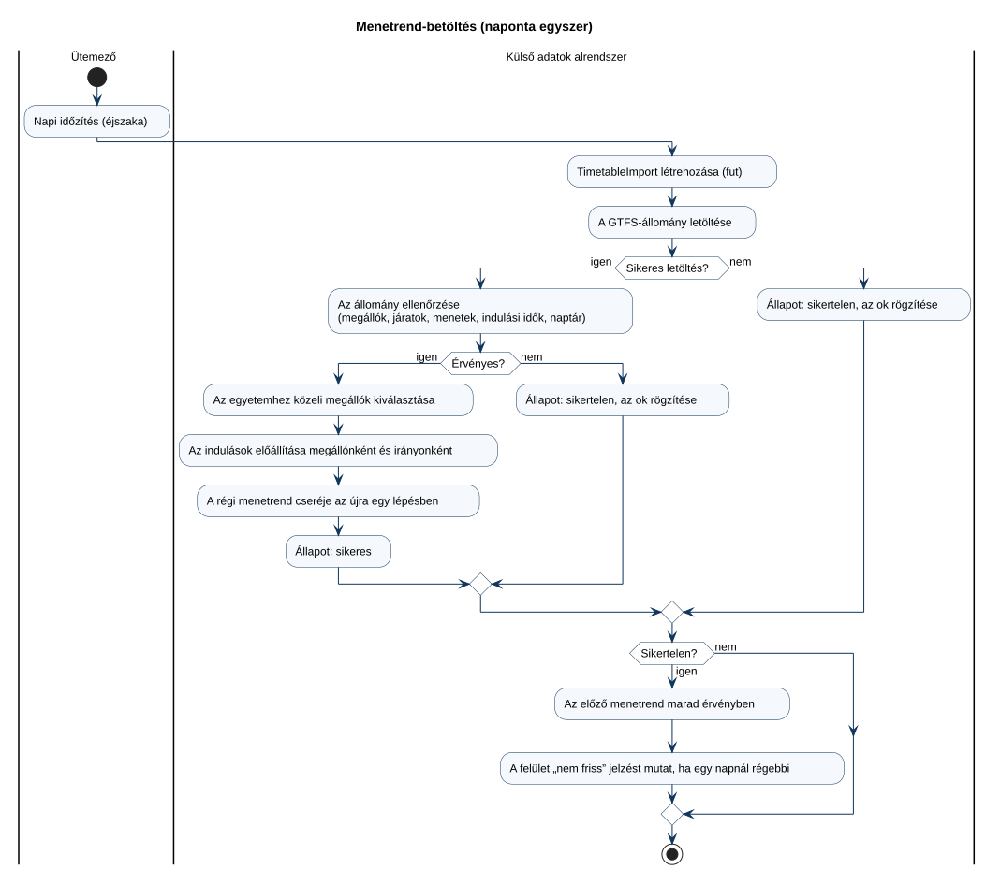
Forrás: H4/uml/s4_act_menetrend.puml
17. ábra – A Külső adatok alrendszer osztálydiagramja
Az alrendszer osztályai attribútumokkal és operációkkal. A Departure a TimetableImport része: egy betöltés minden indulása együtt keletkezik és együtt cserélődik.
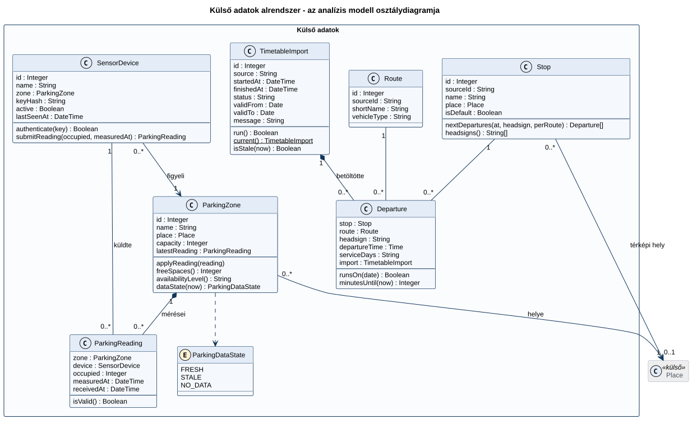
Forrás: H4/uml/s4_class.puml
18. ábra – UC-11 Ügyintézési időpont foglalása – szekvenciadiagram
A foglalás szokásos működése a két kivételes esettel. A megerősítéskor a rendszer újra ellenőrzi, hogy az időpont még szabad-e (E1), és hogy a hallgatónak nincs-e aktív foglalása az ügytípusra (K-30, E2). A visszaigazoló e-mail sikertelensége a foglalást nem érinti (E3).

Forrás: H4/uml/s5_seq_foglalas.puml
19. ábra – UC-12 Saját foglalások kezelése – szekvenciadiagram (lemondás)
A foglalás lemondása. A lemondás csak aktív foglalásnál és legalább 2 órával az időpont előtt lehetséges (K-32); a felszabaduló időpont azonnal újra foglalható.
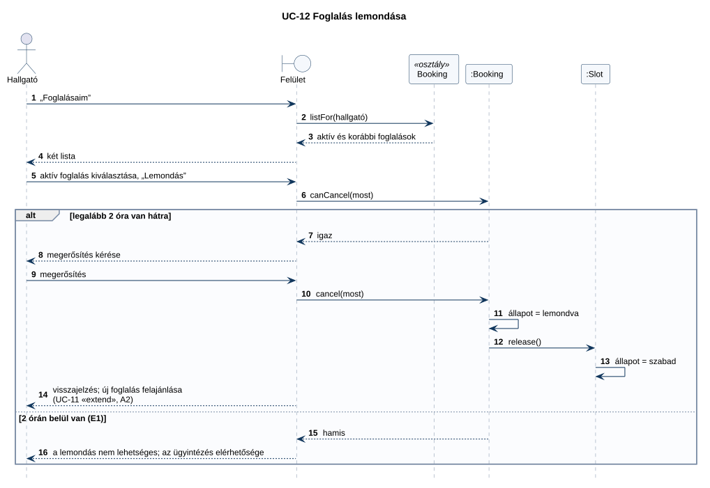
Forrás: H4/uml/s5_seq_lemondas.puml
20. ábra – A Slot (Időpont) osztály állapotdiagramja
Az időpont állapotai. Foglalni csak Szabad állapotú időpontra lehet; foglalt időpont törlésekor a foglalás is törlődik, és a hallgató indoklással értesítést kap (K-42).

Forrás: H4/uml/s5_state_idopont.puml
21. ábra – A Booking (Foglalás) osztály állapotdiagramja
A foglalás állapotai. Egy hallgatónak ügytípusonként legfeljebb egy Aktív foglalása lehet (K-30).
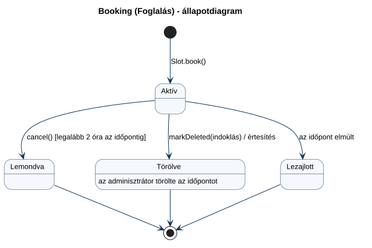
Forrás: H4/uml/s5_state_foglalas.puml
22. ábra – UC-16 Időpontsáv rögzítése – aktivitásdiagram
Hogyan lesz az adminisztrátor által megadott sávból foglalható időpont. Az időpontok előállítása (generateSlots) ismétlődő sávnál hetente megismétlődik az ismétlődés végéig; az átfedés-ellenőrzés minden érintett hétre lefut.
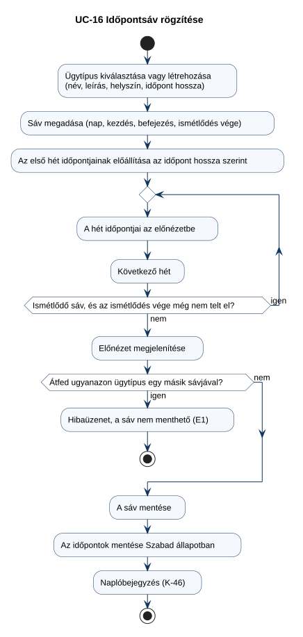
Forrás: H4/uml/s5_act_idopontsav.puml
23. ábra – Az Ügyintézés alrendszer osztálydiagramja
Az alrendszer osztályai attribútumokkal és operációkkal. Egy időponthoz több foglalás is tartozhat időben egymás után (lemondás után újrafoglalás), de aktív foglalás egyszerre csak egy.
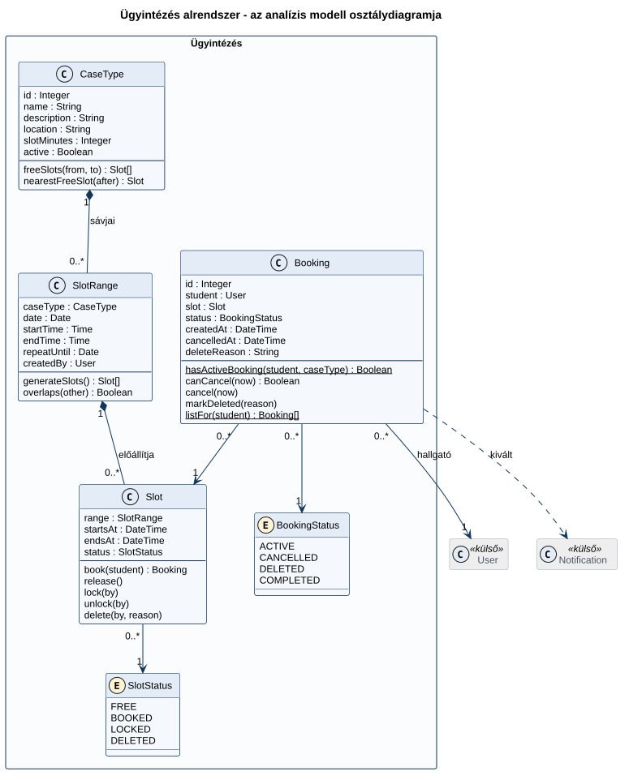
Forrás: H4/uml/s5_class.puml
24. ábra – UC-13 Hibabejelentés beküldése – szekvenciadiagram
A bejelentés beküldése. A kép ellenőrzése (E2) a bejelentés létrehozása előtt történik, így hibás képnél csak a kép utasítódik el. A felelős egységet a ResponsibleUnit.resolve() választja ki a kategória és az épület alapján.

Forrás: H4/uml/s6_seq_bekuldes.puml
25. ábra – UC-17 Hibabejelentések kezelése – szekvenciadiagram
A felelős (adminisztrátor vagy a tanszék oktatója) állapotot módosít és megjegyzést ír. A jogosultságot a canBeManagedBy() ellenőrzi (E2); elutasításnál az indoklás kötelező (K-44, E1). Minden változás előzménybejegyzést, értesítést és naplóbejegyzést eredményez.
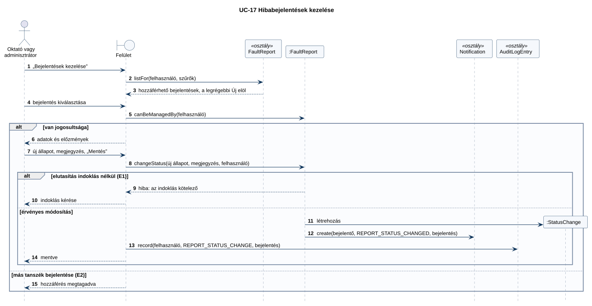
Forrás: H4/uml/s6_seq_kezeles.puml
26. ábra – A FaultReport (Hibabejelentés) osztály állapotdiagramja
A bejelentés négy állapota (K-35). Minden állapotváltozás előzménybejegyzést és értesítést hoz létre. Állapotváltozás nélküli megjegyzés bármelyik állapotban fűzhető a bejelentéshez.

Forrás: H4/uml/s6_state_bejelentes.puml
27. ábra – A bejelentés felelős egységhez rendelése – aktivitásdiagram
A FaultReport.submit() feldolgozási lépései. A hozzárendelési szabály (AssignmentRule) épületenként pontosítja a kategória alapértelmezett felelősét. Az azonosító éven belüli sorszám, így olvasható és egyedi.

Forrás: H4/uml/s6_act_hozzarendeles.puml
28. ábra – A Hibabejelentés alrendszer osztálydiagramja
Az alrendszer osztályai attribútumokkal és operációkkal. Az AssignmentRule a kapcsolatok pontosítása során jelent meg: a kategória és az épület együtt határozza meg a felelőst.

Forrás: H4/uml/s6_class.puml
29. ábra – Az analízis modell áttekintő osztálydiagramja
Az összes alrendszer osztálya és kapcsolata egy ábrán, attribútumok és operációk nélkül. Az osztályok részletes leírása az alrendszerek fejezeteiben található.

Forrás: H4/uml/a99_teljes_osztalydiagram.puml
II. Rendszertervezés
2. ábra – Képernyőterv: Kezdőlap (asztali nézet)
A kezdőlap drótváza. A fejléc, a bal oldali menü és a tartalomterület elrendezése minden képernyőn azonos (SRS 11.1). A kártyák a leggyakoribb funkciókat mutatják; mobilon egymás alá kerülnek, a menü pedig a fejléc gombjával nyílik.

Forrás: H4/uml/r02_wf_kezdolap.puml
3. ábra – Képernyőterv: Új foglalás (UC-11)
Az időpontfoglalás három lépése egy képernyőn: ügytípus, időpont, összegzés. A naptárban csak a szabad időpontok kattinthatók; a foglalás gomb csak az összegzés után aktív.

Forrás: H4/uml/r03_wf_foglalas.puml
4. ábra – Képernyőterv: Új hibabejelentés (UC-13)
A hibabejelentés űrlapja. A kötelező mezőket csillag jelöli; a hibaüzenet a hibás mező alatt jelenik meg, és megmondja, mit kell javítani (SRS 9.3). A helyszín a térképen is kijelölhető.
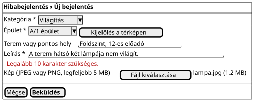
Forrás: H4/uml/r04_wf_bejelentes.puml
5. ábra – Képernyőterv: Bejelentések kezelése (UC-17)
A felelősök listanézete szűrőkkel és a kiválasztott bejelentés részletei. Elutasításnál a megjegyzés mező kötelező (K-44).
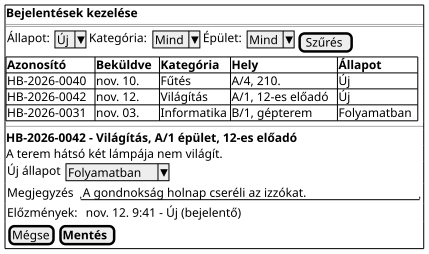
Forrás: H4/uml/r05_wf_kezeles.puml
6. ábra – Szemantikai adatmodell (ER) – felhasználók, szervezet és ügyintézés
Az egyedek, a kapcsolatok és a fontosabb tulajdonságok Chen-féle jelöléssel. A kulcstulajdonság aláhúzva, a kapcsolatok számossága a vonalakon látható (1, N). A szerepkör-hozzárendelés önálló egyed, mert saját tulajdonságai vannak, és oktatói szerepkörnél egy tanszékhez is kapcsolódik. A foglalás szintén önálló egyed, mert az értesítések hivatkoznak rá.

Forrás: H4/uml/r06_er_szemelyek.puml
7. ábra – Szemantikai adatmodell (ER) – tartalom és külső adatok
A tartalmak és a külső forrásból érkező adatok egyedei. A zarva_tartas és az allergen többértékű tulajdonság (dupla ellipszis), a szabad_helyek származtatott tulajdonság (szaggatott ellipszis): nem tároljuk, a kapacitásból és a legutóbbi mérésből számoljuk.

Forrás: H4/uml/r07_er_tartalom.puml
8. ábra – Szemantikai adatmodell (ER) – hibabejelentés
A hibabejelentés egyedei. A HOZZARENDELESI_SZABALY háromágú kapcsolat: egy kategória és egy épület párosához egy felelős egységet rendel. Az ELOZMENY gyenge egyed, csak a bejelentéssel együtt létezik.
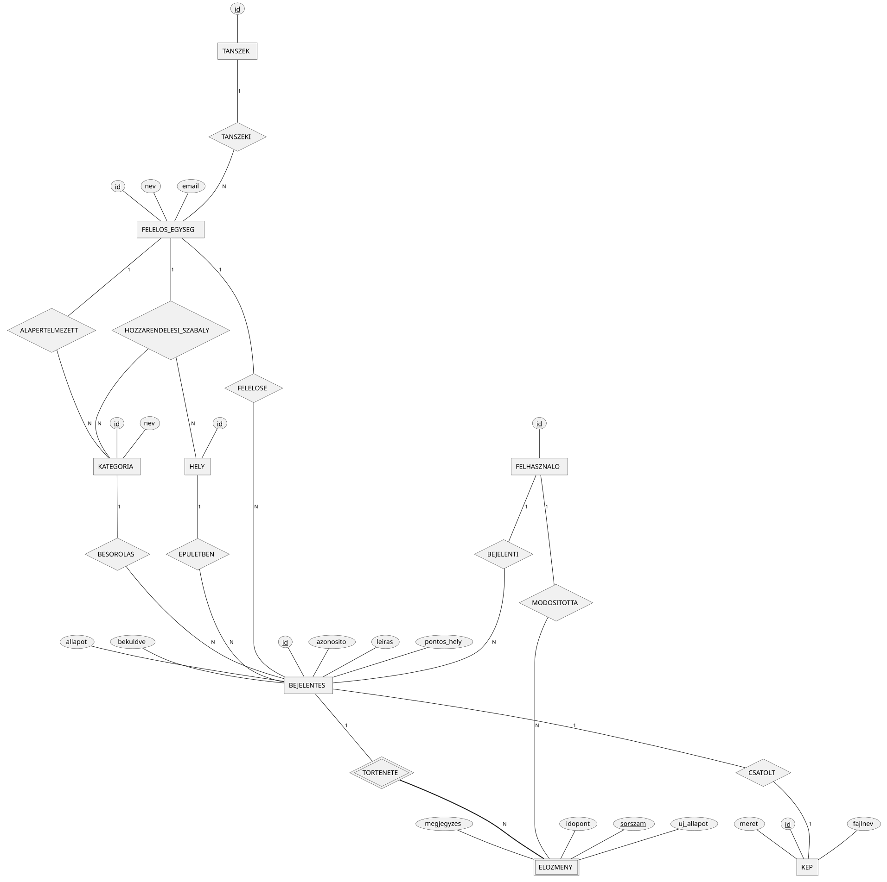
Forrás: H4/uml/r08_er_bejelentes.puml
9. ábra – Relációs adatmodell – felhasználók, szervezet és ügyintézés
A táblák az elsődleges kulccsal (PK), az idegen kulcsokkal (FK) és az egyedi (UQ) oszlopokkal. A csillag a kötelező (NOT NULL) oszlopot jelöli. A vonalak végén a „szarvasláb” a több oldalt jelzi.
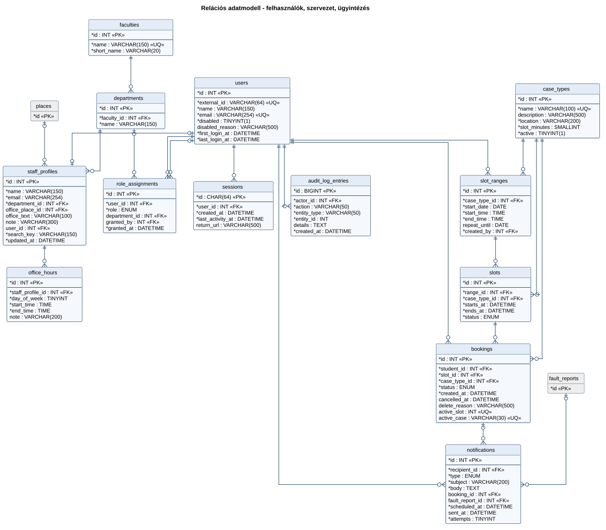
Forrás: H4/uml/r09_relacios_szemelyek.puml
10. ábra – Relációs adatmodell – tartalom és külső adatok
A tartalom és a külső adatok táblái. A négy tartalomtábla (places, news_items, events, daily_menus) mindegyike tartalmazza a Content bázisosztály oszlopait (status, created_by, created_at, updated_at, published_at, version); ezeket az áttekinthetőség kedvéért az ábra is mutatja.

Forrás: H4/uml/r10_relacios_tartalom.puml
11. ábra – Relációs adatmodell – hibabejelentés
A hibabejelentés táblái. A report_code_counters tábla az éven belüli sorszámot adja ki az azonosítóhoz.
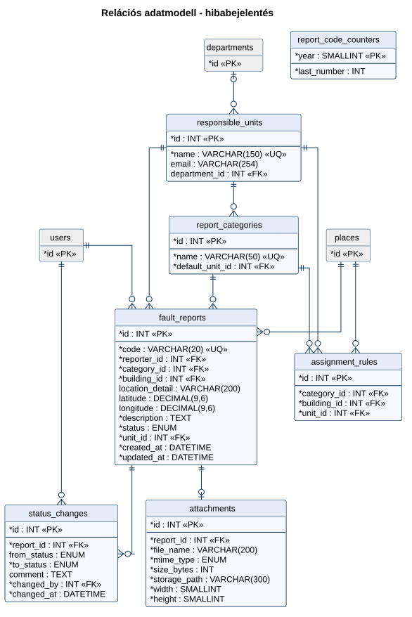
Forrás: H4/uml/r11_relacios_bejelentes.puml
12. ábra – Az adatbázissal kapcsolatot tartó osztályok
Az adatelérési réteg osztályai. A Database az egyetlen osztály, amely közvetlenül a mysql2 kapcsolatkészletet használja; a Repository osztályok paraméterezett SQL-utasításokkal dolgoznak (SRS 7.1), és táblasorokból az analízis modell objektumait állítják elő. A szolgáltatásosztályok (Service) csak repositorykon keresztül érik el az adatokat.

Forrás: H4/uml/r12_adatelero_osztalyok.puml
13. ábra – Egyidejű foglalás kezelése – aktivitásdiagram
Mi történik, ha két hallgató ugyanabban a pillanatban foglalja ugyanazt az időpontot (UC-11 E1). A foglalás egy tranzakcióban fut: az időpont sorát zárolja, újraellenőrzi az állapotát, és csak ezután írja. Ha a zárolás ellenére ütközés lenne, a bookings tábla egyedi indexe (active_slot, active_case) utasítja el a második írást.

Forrás: H4/uml/r13_act_egyideju_foglalas.puml
14. ábra – Értesítések küldése újrapróbálással – aktivitásdiagram
Az e-mailek küldése nem a felhasználói kérés része: a kérés csak sorba állítja az értesítést, a küldést egy percenként futó háttérfeladat végzi. Így az e-mail-szolgáltatás kiesése nem lassítja és nem rontja el a foglalást vagy a bejelentést (SRS 5.6, UC-11 E3).

Forrás: H4/uml/r14_act_ertesites.puml
15. ábra – Egy API-kérés útja a rendszeren belül – szekvenciadiagram
Egy védett kérés feldolgozása rétegenként, a bejelentés állapotának módosításán bemutatva. A hitelesítést és a jogosultság-ellenőrzést közös köztes réteg (middleware) végzi, így ezt nem kell minden végpontnál külön megírni. Hiba esetén egységes JSON-hibaválasz megy vissza.

Forrás: H4/uml/r15_seq_keres.puml
16. ábra – A rendszer komponensei – komponensdiagram
Az alkalmazásszerver belső felépítése. Minden funkcionális alrendszer mindhárom rétegben megjelenik: a router fogadja a kérést, a szolgáltatás (service) végzi az üzleti logikát az analízis modell osztályaival, a repository pedig az adatbázissal tart kapcsolatot. A háttérfeladatok (menetrend-betöltés, értesítések, takarítás) ugyanezeket a szolgáltatásokat használják.
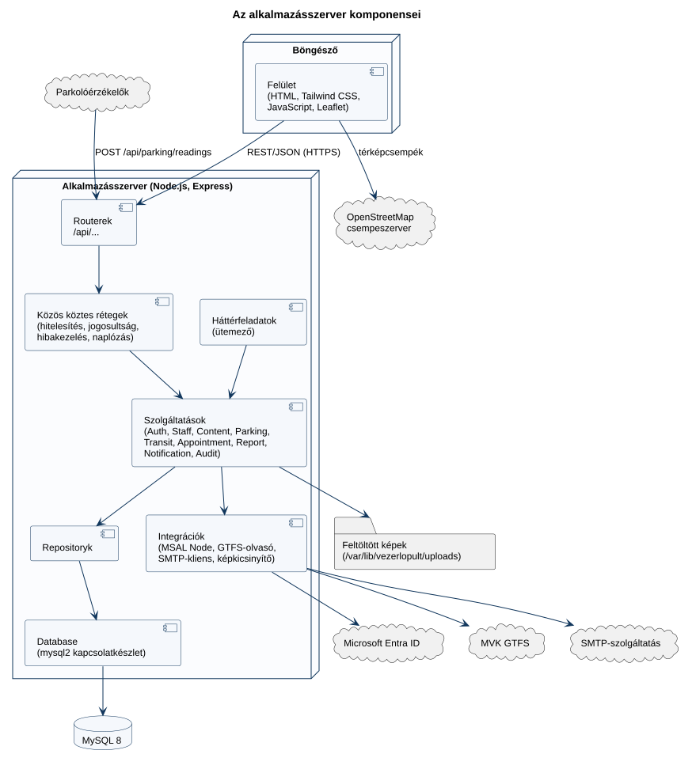
Forrás: H4/uml/r16_komponens.puml
17. ábra – Telepítési diagram
A rendszer futtatási környezete (SRS 8.6): egy bérelt Linux virtuális szerveren fut az Nginx webszerver, a pm2 által felügyelt Node.js-alkalmazás és a MySQL-adatbázis. Kívülről csak a 443-as (HTTPS) port érhető el; a MySQL csak a helyi gépről fogad kapcsolatot.
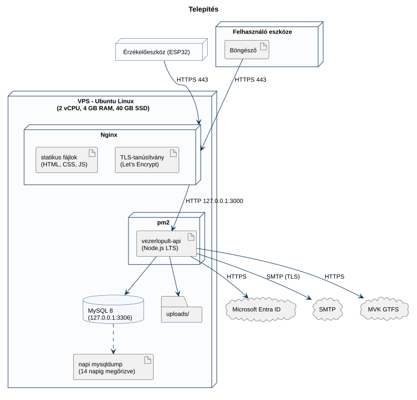
Forrás: H4/uml/r17_telepites.puml